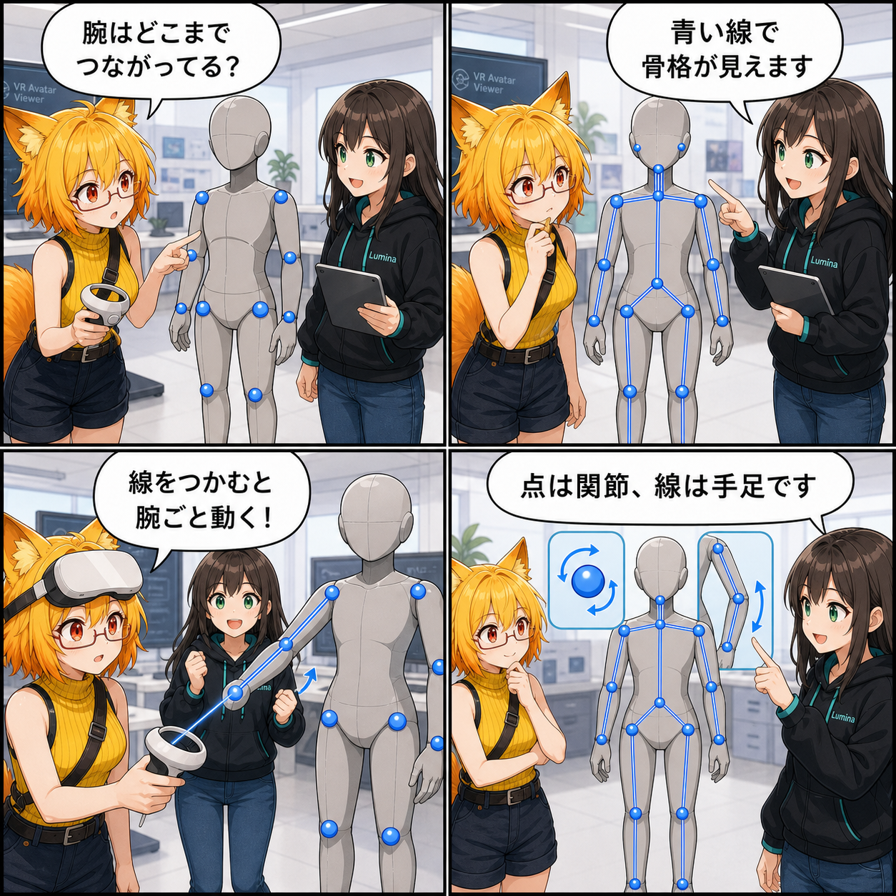

点は関節、線は手足。VRで骨格を直感操作できるようにした日
アバター上の青い関節ハンドルを線で結び、その骨リンクもVRコントローラーで直接つかめるようにしました。
e3e34c0（「Domain Reload待ち時間を短縮」）。対象コミットは9件、集計差分は132ファイル、18,413行追加、9,620行削除でした。Viewer作業ツリーの未コミット AGENTS.md 変更は、集計期間内の実装と確認できないため実績へ含めていません。集計期間は 2026-08-18 03:00:00 JST から 2026-08-19 02:59:59 JST までです。
青い点を、骨格として読める線へ
ポーズ編集用の青いハンドルは関節の位置を示せますが、点だけでは腕や脚がどちらへつながっているかを瞬時に読み取りにくい場面があります。今回追加した AvatarBoneSkeletonDisplay は、既存のHumanoid骨ハンドル同士を青いラインで結び、アバターの骨格をひと続きの構造として見せます。
表示のために新しい骨ターゲットを増やすのではなく、すでにある操作対象から親子関係を組み立てます。線の太さやつかみ判定も両端のハンドル寸法に合わせるため、アバターの大きさが変わっても扱いやすさを保てる構成です。
点をつかむか、線をつかむか
青い球状ハンドルをGripした時は、従来どおりその関節だけを回転します。一方、球に隠れていない骨リンクをGripすると、その腕や脚に対応するIKターゲットを有効にし、手先・足先を動かすようなチェーン操作へ切り替わります。
球と線が視線上で重なった場合は球を優先します。関節を狙ったのに腕全体が動く、といった取り違えを避けつつ、同じ骨格表示の中で「細かく回す」と「まとまりで動かす」を選べるようにしました。
表示・選択・操作を同じ骨格へ
骨リンクは見た目だけの線ではありません。VRのレイから最も近い線分を探す判定、アバター操作の基準点として線上の位置を選ぶ処理、ポーズ表示の更新やアバター削除時の後始末まで、既存の選択・操作フローへ接続されています。
これにより、青い点と線が「現在操作できる骨格」を一貫して表すようになりました。前日の3編集モード整理でポーズ操作の入口を分けたうえで、今回はポーズモードの中をさらに直感的にしています。
同じ期間に進んだこと
同じ集計期間には、水鉄砲のVR操作と照準、左右別のVRコントローラー補正、編集モードのポーズ方式・操作コライダー切り替え、Surface PaintのUV生成とLOD基盤、VABランタイム索引とConverterバッチ処理、PlayModeとDomain Reloadの待ち時間短縮、VAC 1.2仕様の正式化もコミットされています。
9件をまとめた集計差分は132ファイル、18,413行追加、9,620行削除でした。Viewerの作業ツリーにある未コミットの AGENTS.md 変更は、期間内の実装と確認できないため実績へ含めていません。
4コマの裏話
4コマでは、ろひが青い点だけを見て腕のつながりに迷うところから始まります。ルミナが点を結ぶ骨リンクを示し、ろひが線をGripして腕全体を動かすことに成功。最後は「点なら関節、線なら手足」と、2つの操作の違いを短く整理します。
まとめ
既存の青い関節ハンドルを骨リンクで結び、線そのものもVRからつかめる操作対象へ拡張しました。点は単一関節、線はIKチェーンという役割分担と、重なった時の点優先によって、骨格を見ながら意図した粒度でポーズを整えられるようになっています。
本日のひとこと： 点と線に役割があると、骨格はもっと触りやすい。